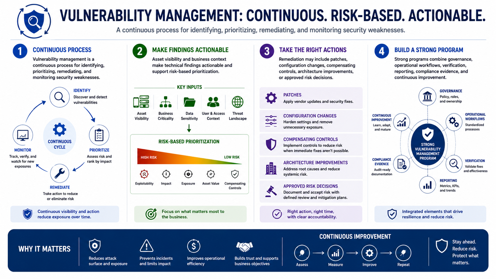

What Is Vulnerability Management?
Course Summary
Connecting to LMS... Progress: in progress
Version 1.0 | Date: 2026-06-18 | Educational overview of vulnerability management concepts.

Narration
Vulnerability management is a continuous process for identifying, prioritizing, remediating, and monitoring security weaknesses.
Asset visibility and business context make technical findings actionable and support risk-based prioritization.
Remediation may include patches, configuration changes, compensating controls, architecture improvements, or approved risk decisions.
Strong programs combine governance, operational workflows, verification, reporting, compliance evidence, and continuous improvement.